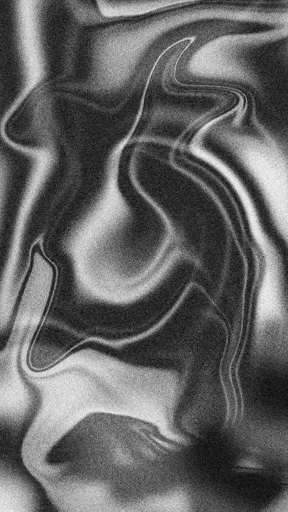
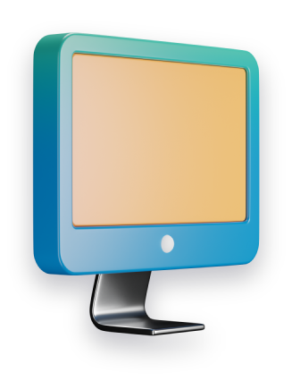
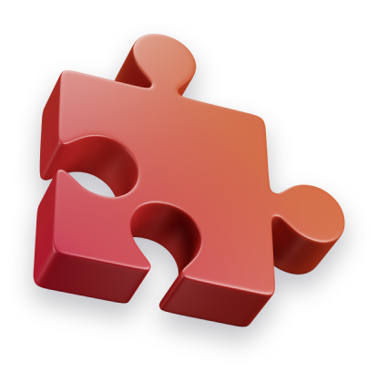
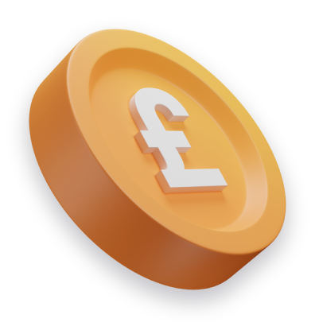

Tender response · DIG0911 · Digital development partner and headless CMS
Built for the next medal moment.
A fast, accessible UK Sport website on a headless SaaS CMS and Next.js, built by a founder-led team and improved every quarter for four years.


01 · What we heard
Four-year cycles, one digital home.
4 years
award cycles that shape UK Sport's investment
£344m
government investment in Olympic and Paralympic sport for the cycle (2024)
£33m+
record winter sport investment for Alpes 2030 (Aug 2026)
11 Dec
tenders due by 3pm GMT, by email
What you asked for
A digital development partner to implement a headless SaaS CMS and a Next.js front end, design and develop the new website, migrate content and support it over a four-year term.
What success looks like
Editors publish funding news, athlete stories and results in minutes, the public finds investment data and stories fast on any device, and the platform keeps improving every quarter.
Sources: DIG0911, Find a Tender notice 106227-2026; uksport.gov.uk: How UK Sport funding works, Current funding awards, news releases (May and August 2026).

02 · What the ITT really asks
What a good partner has to get right.
1
Headless SaaS CMS
A content model editors understand, with roles, workflows and live previews.
Editor-first content model2
Next.js front end
Fast, accessible pages: static where possible, dynamic where it matters.
Core Web Vitals in the green3
Migration
Every page and asset worth keeping moved, with redirects and no lost search visibility.
Tested redirect map4
A four-year partnership
Support, security and continuous improvement, not a one-off build.
Quarterly roadmapWe will confirm together in discovery: content inventory and priority journeys · CMS shortlist and integrations · hosting, security and data-protection requirements
03 · Our solution
Discover, model, build, improve every quarter.

Discover
Stakeholder interviews, analytics, content audit and user journeys.

Model
Content model and CMS configuration, with editor roles and previews.
Build
Next.js front end, design system and accessible components.

Improve
Monthly releases, analytics and a quarterly roadmap.
WCAG 2.2 AA Core Web Vitals UK GDPR by design Code in UK Sport's repository
04 · Preliminary concept
A home for athletes, investment and impact.
uksport.gov.uk
UK SPORTInvestmentAthletesEventsAboutNews
LA 2028 · ALPES 2030
Powering the next
medal moment.
How National Lottery and Exchequer investment turns into performance.
Investment explorerAwards by sport and cycle
Explore →
Athlete storiesOlympic and Paralympic
Read →
Major eventsHosting in the UK
See events →
Headless CMS · Athlete story
Hero · image, headline, sport tag
Story body · rich text, pull quote
Funding block · linked award, cycle
+ Add component
Performance 95+Accessibility 100
PreviewPublish
Preliminary concept prepared for this tender, not an official UK Sport design. Final work follows UK Sport's brand guidelines; content and scores shown are illustrative targets.
05 · Brand presence
The same craft on every component.
Presence, not just a logo
We design every touchpoint a brand needs. For UK Sport, that standard shapes the design system, the component library and every athlete story template.
Logo system Palette and type Signage Apparel and merch Packaging Social templates
Concept brands created by TWO&HUMAN to show our art direction and standard of execution. Fictional brands, not client projects.

06 · Equality, diversity, inclusion and sustainability
Inclusive by design, light on the planet.
Accessible to everyone
WCAG 2.2 AA on every template, tested with keyboard and screen readers. Plain English, captions and alt text built into the CMS so editors keep it accessible.
Accessibility statement and annual auditRepresent every athlete
Olympic and Paralympic athletes given equal weight in navigation, stories and imagery. Content guidance for inclusive language and representation.
Inclusive content guide for editorsLow-carbon website
Static generation where possible, optimised images and lean JavaScript cut data per page. A page-weight and carbon estimate is reported every quarter.
Quarterly carbon and performance reportA fair, diverse team
A founder-led studio co-founded by a woman software engineer. Remote delivery with no business travel, and the same standards required of any subcontractor.
Standards apply to every subcontractor
Reported every quarterAccessibility issues found and fixed · Core Web Vitals · average page weight · carbon estimate per visit · actions for the next quarter

07 · Scope and deliverables
Build, migrate, then four years of care.
Discovery
Interviews, analytics review, content audit, journeys and CMS shortlist.
Discovery reportCMS implementation
Content model, roles, workflows, previews and editor training.
Configured CMSNext.js build
Design system, accessible components, search and integrations.
Staging siteMigration
Approved content and assets moved, metadata and a tested redirect map.
Content sign-offQuality and launch
WCAG 2.2 AA audit, performance, security and cross-device testing.
LaunchSupport and development
Service levels, security updates, monthly releases, quarterly roadmap.
MonthlyAssumptions that protect your budget: SaaS CMS licence and hosting contracted in UK Sport's name and billed at cost · content volume confirmed in discovery · two revision rounds per design deliverable · work outside scope quoted in writing first.

08 · Timeline and success measures
Live in 20 weeks, better every quarter.
Weeks 1–4
Discover
- Interviews and content audit
- Journeys and CMS shortlist
- Discovery report
Weeks 5–9
Model and design
- Content model
- Design system
- Clickable prototype
Weeks 10–18
Build and migrate
- Next.js and CMS build
- Content migration
- Staging review
Weeks 19–20
Launch
- Accessibility and performance tests
- Editor training
- Go-live and hypercare
Start date follows contract award. After launch, a monthly release cycle and a quarterly roadmap run for the rest of the four-year term. The UK is 3 hours ahead of us, so we overlap UK working afternoons every day.
Core Web Vitals passed on key templates Zero critical accessibility issues at launch Editor publishing time Uptime and response within service levels
09 · Team and the questions you should ask
Founder-led, and ready for hard questions.
Julio Briones
Co-founder · Account and delivery lead
Single point of contact. Runs discovery, content and delivery; coordinates deliverables, revisions and QA for international clients.
Mariam Neme
Co-founder · Software engineer
Leads the Next.js build, CMS integration, accessibility, performance and the four-year technical roadmap.
Established 2026 · Tucumán, Argentina · remote, in English and Spanish · founder-led: the people in this proposal do the work.
Can a remote team support UK Sport day to day?
Yes. Our working day overlaps UK afternoons, response times are written into the service levels, and calls run at UK-friendly hours.
What evidence do we see before the main build?
The concept in this response and a clickable prototype in week 9, approved before the build starts. Payments follow approved milestones.
Will we be locked in?
No. Code lives in UK Sport's repository, content in UK Sport's CMS account, and the stack is standard Next.js with documentation.
Contracts, insurance and invoicing?
Invoices in pounds sterling, prices exclusive of VAT, and insurance cover as required by the contract.

10 · Investment (GBP)
One build, four years of continuous development.
Build
£52,800 one time
Discovery to launch · 20 weeks
- Discovery and content model
- Design system and Next.js build
- Migration and redirects
- Accessibility and performance testing
Recommended
Support and development
£3,250 /month
from launch · 42 months
- Service levels and security updates
- Monthly releases
- About 8 development days a month
- Quarterly roadmap and reports
Rate card
£380 /day
additional work
- Quoted in writing first
- Same team and standards
- Only on request

Launch guarantee. If key templates do not pass Core Web Vitals and WCAG 2.2 AA automated checks at launch, we fix them at no cost before final acceptance.
Four-year services total: £189,300 (build £52,800 + 42 × £3,250). SaaS CMS licence and hosting in UK Sport's name at cost · prices exclusive of VAT · payments on approved milestones · valid 90 days · also entered in UK Sport's pricing schedule.

11 · Compliance and next steps
Ready to build UK Sport's next digital chapter.
Headless SaaS CMS implementationYes
Next.js front endYes
Design and developmentYes
Content migrationYes
Support, four-year termYes
Accessibility, WCAG 2.2 AAYes
EDI and sustainabilityPage 7
ITT forms and appendicesIncluded
1 · Submission
By email to digital@uksport.gov.uk before 3pm GMT, 11 December.
2 · Clarifications
Aligned with the consolidated Q&A due by 30 November.
3 · Presentation
A walk-through of the prototype approach.
Julio Briones · julio@twoandhuman.com · +54 381 509 8972 · twoandhuman.com